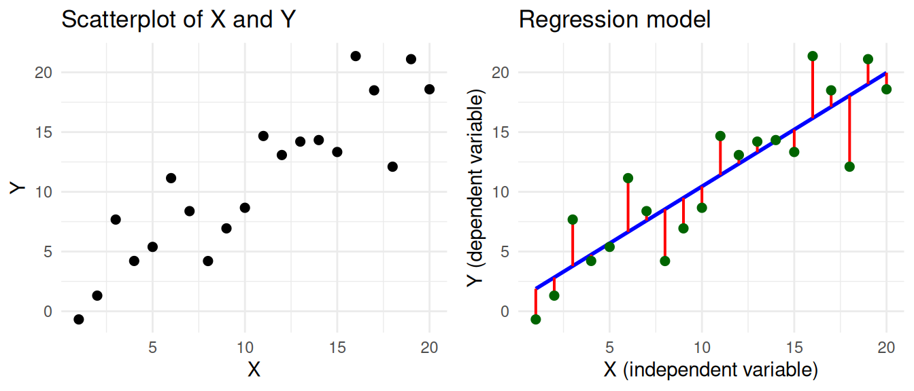

5.3 Simple Regression
Understanding the linear model with a single predictor.
You arrive here from Comparing two Groups and Testing Associations, so you can already compare two group means with a t-test and test whether a correlation differs from zero. Here you’ll learn the linear model that sits behind both of those tests: fitting a straight line through your data, reading the slope as an effect, and judging how well it fits with R². It’s the gateway to almost every method that follows, from ANOVA to multiple regression.
→ See this module in the skill tree
5.3.1 What is a linear model?
Regression analysis is a statistical technique for predicting a dependent variable (DV) based on one or more independent variables (IVs). We use predict in a statistical sense, meaning that we are estimating how well we can guess the dependent variable given knowledge of the independent variable(s). The reason we want to do this is usually not to make actual predictions, but to understand the world better. If we can model how a variable is predicted by one or more other variables, we can make inferences about the relationship between these variables. Specifically, regression analysis allows us to test hypotheses of the sort:
- Older people have more trust in journalists
- People on the political left have more trust in journalists than people on the political right
You could test these hypotheses one-by-one with a correlation test and a t-test, respectively. The benefit of regression analysis is that you can test these hypotheses in the same model, and thereby also controlling for the relations between the independent variables. This allows us to deal with confounding, which can be critical when working with observational data. For instance, if younger people are more likely to be on the political left, then in order to test the effect of political orientation on trust, we need to somehow control for age.
This module covers the linear model with a single predictor (often called simple regression). We first discuss how it works under the hood: we won’t go deep into the math, but a basic understanding of the regression equation and the \(R^2\) value is helpful. If you are already familiar with regression and are just here to learn how to do it in R, you can safely skip that part and go straight to How to use. Using several predictors is covered in Multiple Regression, and checking whether the model is appropriate in Linear Model Assumptions.
5.3.2 How does it work?
In simple linear regression we have a dependent variable Y and an independent variable X, and we want to predict Y based on X. The goal is to find a mathematical formula that best describes their relationship. You can visually think of this as a scatterplot, where we draw a regression line such that the distance between the line and the data points is as small as possible.
This visualization corresponds to the regression equation. We’ve coloured the different parts of the equation according to the colours used in the visualization.
\[ \Large \color{Green} Y_i = \color{Blue} b_0 + b_1 X_i + \color{Red} \epsilon_i \]
- \(\color{Green} Y_i\) represents the real values of the dependent variable (\(Y_1, Y_2, ... Y_n\)) that we want to predict.
- \(\color{Blue} b_0 + b_1 X_i\) represents our prediction of y. It has two coefficients:
- intercept \(\color{Blue} b_0\): The value of Y when X is zero.
- slope \(\color{Blue} b_1\): How much Y changes for every unit increase in X.
- \(\color{Red} \epsilon_i\) represents the residual. This is the distance between the predicted and the real value of Y.1
Based on this equation, we can learn two important things about the relationship between X and Y:
- The effect of X on Y: The slope \(b_1\) tells us how much Y changes for every unit increase in X.
- The model fit: Based on the residual \(\epsilon_i\) we can calculate how well the model fits the data.
The effect of X on Y
Based on the coefficients of the regression model, we can make inferences about the relationship between the variables. In the example, we see that there is a positive relationship between X and Y, because the slope is positive. If X goes up, then Y tends to go up as well. This relation is expressed by the coefficient \(b_1\), which in our example is 0.95. For every unit increase in X, Y increases by 0.95.
We can also interpret the intercept (\(b_0\)), which is the value of Y when X is zero. However, this is not always meaningful. For example, if the independent variable is age, then the intercept would be the predicted value of Y for a person that is 0 years old. This is why the intercept is often not interpreted.
Model fit
Based on the coefficient of the independent variable we can say something about the relation between X and Y. However, this is not the full story. Based on the coefficients we can make a prediction of Y, but we don’t yet know how good this prediction is. This is why we also need the coefficent of determination (\(R^2\)), which tells us how well the model fits the data.
We can calculate this based on the residual \(\epsilon_i\). The residuals tell us how bad our prediction is for each data point. To get a single score for how bad our prediction is for all data points, we can calculate the residual sum of squares (\(SS_R\)). As the name implies, we take the sum of the squared residuals.
\[ SS_R = \large \sum_{i=1}^{n} {\color{red} \epsilon_i^2} \]
You can think of the \(SS_R\) as the variance of the real values of Y around the predicted values of Y. If our model is perfect, then the \(SS_R\) would be zero. But how do we know how not-perfect our model is? how high is too high? For this, we can look at the total sum of squares (\(SS_T\)), which is the sum of the squared differences between the real values of Y and the mean of Y.
\[ SS_T = \sum_{i=1}^{n} (Y_i - \bar{Y})^2 \]
The \(SS_T\) is the total variance in Y. Notice that the calculation is similar to the \(SS_R\), but instead of the predicted values of Y, we use the mean of Y. So now we can use this to see how much better our prediction is than just using the mean of Y. By subtracting the variance that we did not explain (\(SS_R\)) from the total variance (\(SS_T\)), we get the variance that we did explain, called the model sum of squares (\(SS_M\)). \[ SS_M = SS_T - SS_R \]
And now we can calculate the \(R^2\) value: the proportion of the total variance that has been explained by our model. \[ R^2 = \frac{SS_M}{SS_T} \]
The \(R^2\) is a value between 0 and 1, that tells us how much of the variance in the dependent variable is explained by the independent variable(s). In our example the \(R^2\) is 0.79, which means that 79% of the variance in Y can be explained by the variance in X. This is very high, especially for social science data. When we’re trying to predict human behaviour, we’re usually already happy if we can explain a few percent of the variance.
TipInteractive widget for building intuition
Try for yourself how the regression line changes when you change the values of the intercept and slope! The goal is to get the lowest possible SSE (and the highest possible R2), which means that the line is as close as possible to the data points.
Note that because you’re manually tweaking the intercept and slope, you might actually create a model that is worse than the mean of Y, which is why you can get a negative \(R^2\). In a regression model this is not possible, because it will always find a model that is at least as good as the mean of Y.
TipSpoiler
The optimal values for the intercept and slope are \(b_0 = 0.930\) and \(b_1 = 0.952\). This should give you an \(R^2\) of \(0.79\).
5.3.3 How to use
We’ll show you how to fit simple linear regression with a single numeric independent variable.
- First, we’ll look at simple linear regression with a single numeric independent variable.
- Then, we’ll perform a multiple regression with two numeric independent variables, and show you how this allows you to control for the relations between the independent variables.
- In the third step we’ll show you how to use a categorical independent variable in the regression model.
- Finally, we’ll show you how to use interaction effects in the regression model, and how you can use this to test moderation.
We’ll be using our standard (simulated) practice data, and a bit of tidyverse to load and clean the data. We’ll also be using the sjPlot package, which can create nice tables and plots of regression models.
library(tidyverse)
library(sjPlot)
d <- read_csv("https://dev.dataliteracy.cc/practice_data.csv") |>
mutate(age = if_else(age > 100, 2024 - age, age)) |>
select(age, political_orientation, political_interest, trust_t1,
news_consumption = `news consumption`)
dSimple linear regression
We start with the example of predicting trust in journalists based on age. For this we’ll be using the trust_t12 variable as the dependent variable, and the age variable as the independent variable. We can use the lm() function to create a linear regression model. Inside the lm() function we specify the formula for the regression, which has the format dependent ~ independent.
m <- lm(trust_t1 ~ age, data = d)The standard way to inspect the results is using the summary(m) function. This gives you all the information you need, but not in a very nice and readable format. We will therefore be using the tab_model() function from the sjPlot package to get a nice table of the results with some additional statistics (like the confidence intervals for regression coefficients).
tab_model(m)| trust_t1 | |||
|---|---|---|---|
| Predictors | Estimates | CI | p |
| (Intercept) | 3.20 | 2.93 – 3.46 | <0.001 |
| age | 0.03 | 0.02 – 0.03 | <0.001 |
| Observations | 595 | ||
| R2 / R2 adjusted | 0.114 / 0.112 | ||
CautionBackup plan if tab_model doesn’t work
The tab_model function by default shows the regression table in your viewer pane. If this for some reason doesn’t work, you can also use the use.viewer=F argument to show the table in your default web browser.
tab_model(m, use.viewer=F)
NoteConfidence intervalls without tab_model
In case you want to calculate the confidence intervals yourself, instead of using the tab_model function, you can use the confint() function. Here you provide the model as an argument, and you can also specify the level of the confidence interval (default is 95%).
confint(m)
confint(m, level = 0.95)The output of the regression analysis gives us values for two coefficients: the (intercept) and the age variable (like \(b_0\) and \(b_1\) in the regression equation). We get the coefficient estimates and p-values that tell us if these coefficients are statistically significant. With tab_model we also get the confidence interval.
- The coefficient for the
intercepttells us the predicted value oftrust_t1whenageis zero. This is not very meaningful in this case, because we don’t have any people with an age of zero in our data. - The coefficient for
agetells us how muchtrust_t1changes for every unit increase inage.- Our
agevariable is in years, so the coefficient 0.03 tells us that for every year of age, trust in journalists increases on average by 0.03 points. - The p-value < 0.001 tells us that this effect is statistically significant.
- The confidence interval tells us that we are 95% confident that the true effect of
ageontrust_t1is between 0.02 and 0.03.
- Our
We also get the \(R^2\) value, which tells us how well the model fits the data. Here we see that the \(R^2\) is 0.114, which means that 11.4% of the variance in trust_t1 can be explained by the variance in age.
In conclusion, this model shows that (in our simulated data) there is no significant effect of age on trust_t1.
Further resources
- 🎥 StatQuest: Linear Models & R-squared — a clear, visual walkthrough of what fitting a line and R² actually mean.
Footnotes
For example, at \(X = 10\), the blue line predicting Y passes through the point \(Y = 10.45\). However, the real value of Y at this point is 8.66. So the residual \(\epsilon_i\) at this point is \(8.66 - 10.45 = -1.79\).↩︎
We use the
trust_t1variable here, because for the current analysis we are not interested in the effect of the experimental group. Sincetrust_t1is measured before the experiment, it is not influenced by the experiment.↩︎